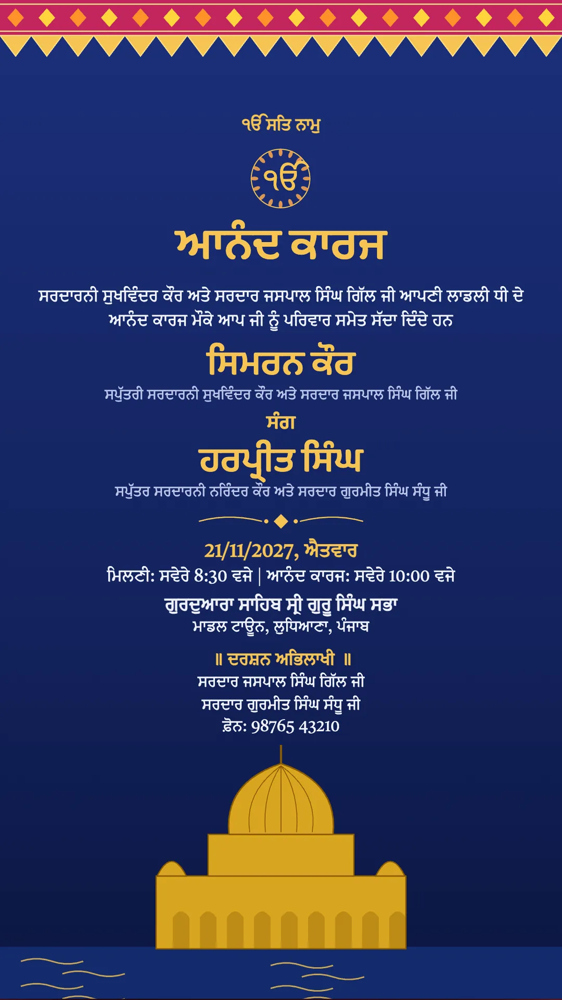
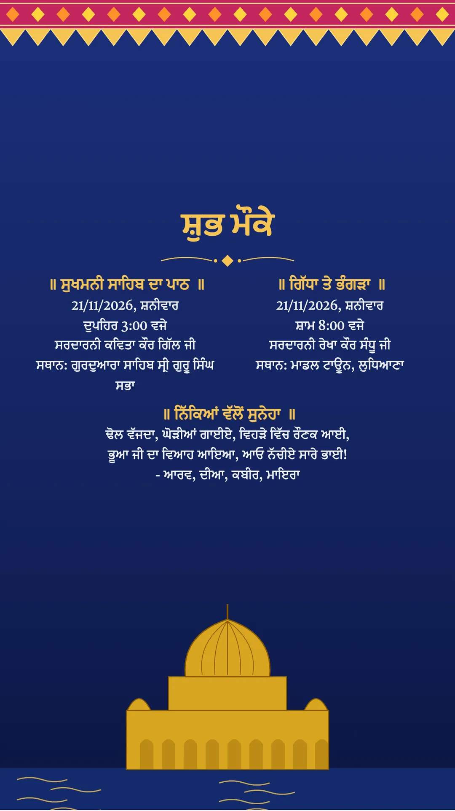
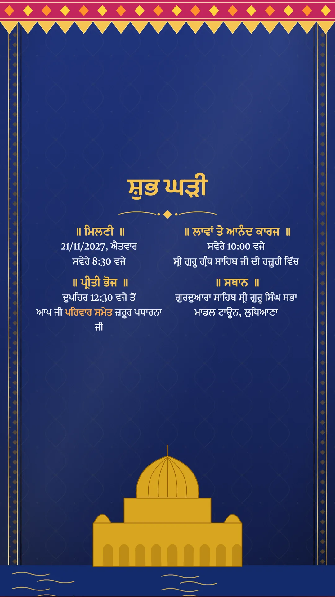
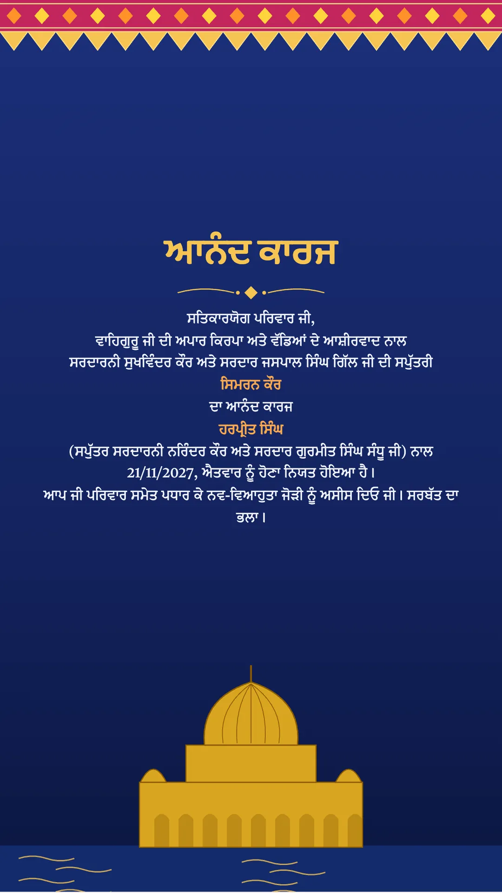
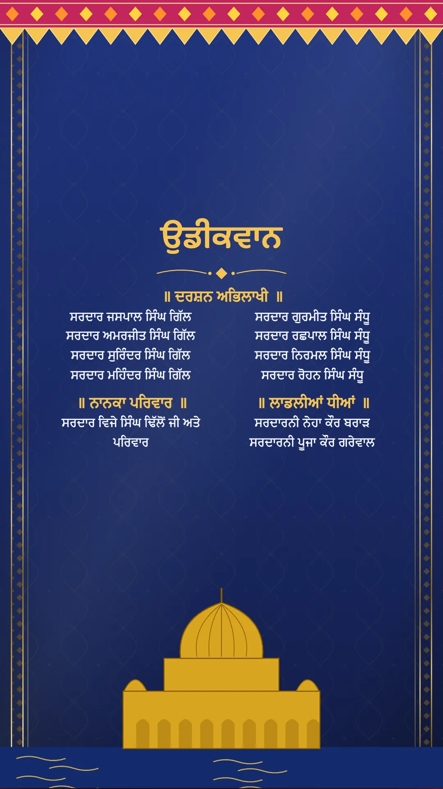
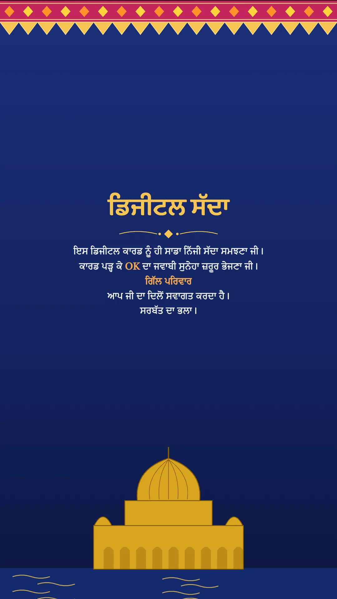

Designs › Wedding (Vivah) › Anand Karaj Royal Blue
Anand Karaj Royal Blue: Punjabi Anand Karaj card

- Ceremony: Wedding (Vivah)
- Language: Punjabi
- God or sacred symbol: Ek Onkar
- Format: WhatsApp image (1080 x 1920 px) and 5 x 7 inch print PDF
- Pages: 6 (cover, functions, wedding-day programme, letter, family names, closing message)
About this design
A deep royal blue card that darkens towards the bottom. Across the top edge runs a magenta band cut into gold zigzag teeth, set with small yellow and orange diamonds. At the bottom, a golden gurdwara with a ribbed dome and an arched base sits above dark water marked with gold ripple lines. There is nothing else on the card, which keeps the Gurmukhi text easy to read on a phone.
The cover opens with ੴ ਸਤਿ ਨਾਮੁ and an Ek Onkar emblem in gold, then ਆਨੰਦ ਕਾਰਜ in large gold Baloo Paaji letters. The names are in gold and the rest of the text is white Tiro Gurmukhi. The sample follows a Sikh wedding morning: milni at 8:30 and the Anand Karaj at 10:00 at the gurdwara, with the parents written as Sardarni and Sardar and ਜੀ after their names.
The inner pages keep to the same programme. The functions page lists a Sukhmani Sahib path and an evening of giddha and bhangra, and a short verse from the children. The wedding-day page has the milni, the lavan in the presence of Sri Guru Granth Sahib Ji, and the langar or lunch from 12:30. The letter and the closing message both end with ਸਰਬੱਤ ਦਾ ਭਲਾ.
It suits Sikh and Punjabi families holding a morning Anand Karaj at a gurdwara. The gurdwara is drawn as a simple golden outline rather than a particular building, so it fits whichever gurdwara you marry in. For the events around the wedding, Misri Roka Phulkari, Mayun Night Parandi and Dhol Jaago Phulkari are also in Punjabi and open with Ek Onkar.
All 6 pages
The cover is shown above. These are the other pages exactly as the card opens in the editor, with the sample family names.





Sample wording on this card
The cover opens in the editor with this text. Change any line, or switch the card to another language.
ੴ ਸਤਿ ਨਾਮੁ
ਆਨੰਦ ਕਾਰਜ
ਸਰਦਾਰਨੀ ਸੁਖਵਿੰਦਰ ਕੌਰ ਅਤੇ ਸਰਦਾਰ ਜਸਪਾਲ ਸਿੰਘ ਗਿੱਲ ਜੀ ਆਪਣੀ ਲਾਡਲੀ ਧੀ ਦੇ ਆਨੰਦ ਕਾਰਜ ਮੌਕੇ ਆਪ ਜੀ ਨੂੰ ਪਰਿਵਾਰ ਸਮੇਤ ਸੱਦਾ ਦਿੰਦੇ ਹਨ
ਸਿਮਰਨ ਕੌਰ
ਸਪੁੱਤਰੀ ਸਰਦਾਰਨੀ ਸੁਖਵਿੰਦਰ ਕੌਰ ਅਤੇ ਸਰਦਾਰ ਜਸਪਾਲ ਸਿੰਘ ਗਿੱਲ ਜੀ
ਸੰਗ
ਹਰਪ੍ਰੀਤ ਸਿੰਘ
ਸਪੁੱਤਰ ਸਰਦਾਰਨੀ ਨਰਿੰਦਰ ਕੌਰ ਅਤੇ ਸਰਦਾਰ ਗੁਰਮੀਤ ਸਿੰਘ ਸੰਧੂ ਜੀ
22/11/2026, ਐਤਵਾਰ
ਮਿਲਣੀ: ਸਵੇਰੇ 8:30 ਵਜੇ | ਆਨੰਦ ਕਾਰਜ: ਸਵੇਰੇ 10:00 ਵਜੇ
ਗੁਰਦੁਆਰਾ ਸਾਹਿਬ ਸ੍ਰੀ ਗੁਰੂ ਸਿੰਘ ਸਭਾ
ਮਾਡਲ ਟਾਊਨ, ਲੁਧਿਆਣਾ, ਪੰਜਾਬ
ਦਰਸ਼ਨ ਅਭਿਲਾਖੀ
ਸਰਦਾਰ ਜਸਪਾਲ ਸਿੰਘ ਗਿੱਲ ਜੀ
ਸਰਦਾਰ ਗੁਰਮੀਤ ਸਿੰਘ ਸੰਧੂ ਜੀ
ਫ਼ੋਨ: 98765 43210
The other five pages are ਸ਼ੁਭ ਮੌਕੇ (the functions before the wedding), ਸ਼ੁਭ ਘੜੀ (the wedding-day programme), ਆਨੰਦ ਕਾਰਜ (the letter), ਉਡੀਕਵਾਨ (the family names) and ਡਿਜੀਟਲ ਸੱਦਾ (the closing message).